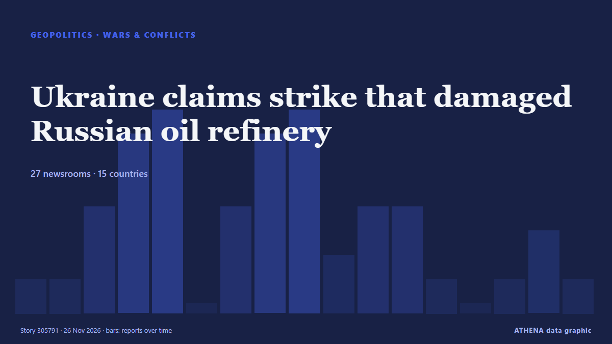

Wars & conflicts
SponsoredPresented by  Cybernetics and Artificial Intelligence Lab Welcome to the Cybernetics and Artificial Intelligence Laboratory, established at the Department of Business Administration of the National and Kapodistrian University of Athens. The lab is headed by Professor Dimitrios Thomakos. The lab aims to do research that can be published in top venues. Our research uses tools and methods of Artificial Intelligence, and lies in the following areas: - Forecasting - Decision making - Cyber security - Finance We are always looking forward to collaborating with exceptional students!
Cybernetics and Artificial Intelligence Lab Welcome to the Cybernetics and Artificial Intelligence Laboratory, established at the Department of Business Administration of the National and Kapodistrian University of Athens. The lab is headed by Professor Dimitrios Thomakos. The lab aims to do research that can be published in top venues. Our research uses tools and methods of Artificial Intelligence, and lies in the following areas: - Forecasting - Decision making - Cyber security - Finance We are always looking forward to collaborating with exceptional students!
| 15 Nov | 1 |
|---|---|
| 16 Nov | 0 |
| 17 Nov | 1 |
| 18 Nov | 0 |
| 19 Nov | 1 |
| 20 Nov | 1 |
| 21 Nov | 0 |
| 22 Nov | 1 |
| 23 Nov | 0 |
| 24 Nov | 3 |
| 25 Nov | 5 |
| 26 Nov | 5 |
| 27 Nov | 0 |
| 28 Nov | 0 |

Ukraine claims strike that damaged Russian oil refinery
The Slavyansk-on-Kuban oil refinery, one of the largest in southern Russia and part of the Slavyansk EKO group, is near the Russia-occupied Crimean peninsula and has already been attacked several… from Citizen Digital
ZIM restarts Levant Black Sea Express without Alexandria call
ZIM has resumed its Levant Black Sea Express (LBX), restoring feeder links between Israel and the Black Sea ports of Constanta and Varna. from Container News
Levski fans hurt amid violence in Marseille
Levski Sofia coach Julio Velazquez condemned the violent clashes between fans of Levski Sofia and Marseille ahead of their Europa League game, calling them ‘unacceptable for football.’ The incidents… from Arab News
Russian drone attack damages two educational facilities in Kremenchuk, injuring two children
Two educational facilities were damaged and two children injured in a Russian drone attack on Kremenchuk, Poltava region. from Ukrinform (English)
Sudan rebels claim hundreds killed as they capture strategic military camp near Damazin
Sudan's Tasis forces claimed that hundreds were killed or wounded as they captured Maqanza military camp in Blue Nile, advancing towards Damazin. from Tuko
Mecca pact allies condemn ‘heinous’ Houthi attacks on Saudi Arabia
Officials from Pakistan, Saudi Arabia and Turkiye pledge to protect the kingdom's security during talks in Islamabad. from Al Jazeera English
Ukraine says Benghazi drone attack not directed against Libya
Ukrainian Foreign Minister Andrii Sybiha said on Thursday that Kyiv's targeting of Russian ships in Benghazi was not directed at Libya itself. from The New Arab
Saudi-led coalition destroys 50 Iran-Backed Houthi military targets in Yemen
RIYADH, Nov 26: The Saudi-led coalition announced that it had carried out a precision military operation targeting the capabilities of Yemen's Houthi militia, destroying 50 militar... from Arab Times
Turkey, Saudi Arabia and Pakistan to discuss Yemen war
The foreign and defense ministers of Turkey, Saudi Arabia and Pakistan will discuss Saudi Arabia’s conflict with Iran-backed Houthi fighters in Yemen when they meet in Islamabad this week, Pakistani… from Turkish Minute
UK tells 100,000 military reservists to prepare for possible war call-up: Report
Letters offer volunteers training and exercises as Britain seeks to bolster defence readiness. from Express Tribune
Iran denies responsibility for Kuwait drone strike that killed two Italians
Iran's Foreign Minister Abbas Araghchi called the accusations baseless and the incident "suspicious" and offered to cooperate on a joint investigation. from Euronews English
Ukraine says North Korea temporarily halted missile shipments to ally Russia
It comes amid diplomatic tensions between the allies, said Ukraine’s military intelligence agency. from The Straits Times
Zelenskyy says Russia preparing new mass strike in coming days
The warning was the second issued by the Ukraine president this week. from CNA (Channel NewsAsia)
Trump, NATO chief urge Russia not to expand war in Ukraine
President Trump and NATO Secretary General Mark Rutte urged Russia not to expand its war with Ukraine, as peace talks between the countries have made little headway in recent weeks and as the… from The Hill
Iran denies involvement after 2 Italian technicians killed in attack on Kuwait site
Two Italians were killed in a drone attack in Kuwait on Thursday that Italy and Kuwait blamed on Iran, although Tehran has denied any involvement. from CBC News (alternative feed)
Israeli Strike Kills Hamas Security Official, Family In Gaza
Medics said an Israeli airstrike hit an apartment in Deir Al-Balah in the central Gaza Strip on Thursday, killing Khaled Abu Nada, the deputy Gaza education minister, and his wife. from NDTV World
UN Warns of Growing Risk of Atrocities by Israel Against Palestinians
The United Nations has issued a warning about the increasing risk of atrocity crimes by Israel against Palestinians, highlighting the situation in the West Bank and Gaza Strip. from Arab News
Britain moving military aircraft to hangars at night over possible drone threats, media reports say
The Times and Sky News said it included plans to use anti-drone netting to protect exposed aircraft. from The Straits Times
Interactive: 720,000 Russian soldiers killed? Who are the men dying in Putin’s war
Western officials estimated in August that the Kremlin was losing 6,000 more troops per month than it could enlist. from The Independent